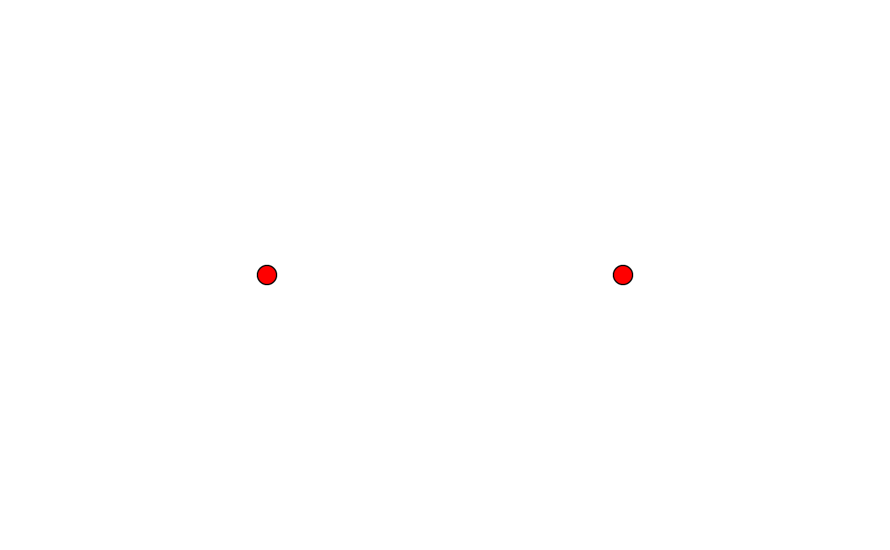

Attach (or replace) an accessible name (title) and long description
(desc, the alt text) on an existing scene. The SVG backend then emits
role="img" + <title>/<desc>, and the PDF backend tags the page as a
Figure with the description as Alt text — meeting WCAG 1.1.1 (text
alternative). Equivalent to passing title/desc to vl_scene().
Arguments
- scene
A
vl_scene().- title
An accessible name (short), or
NULLto leave unset.- desc
A long description / alt text, or
NULLto leave unset.
Examples
vl_scene(2, 2) |>
draw(points_grob(c(0.3, 0.7), 0.5, gp = vl_gpar(fill = "red"))) |>
describe(title = "Two red dots", desc = "Two red points on a white field.")
